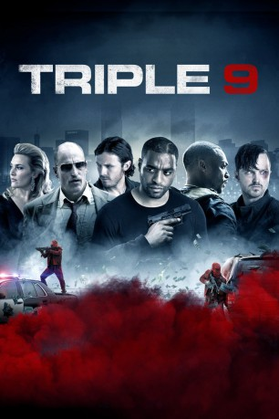

#4346 Triple 9
 gesehen am 12.09.2016
gesehen am 12.09.2016
 
 IMDB-Wertung: 6.3 / 10
IMDB-Wertung: 6.3 / 10  Tomatometer: 53
Tomatometer: 53  Metascore: 0
Metascore: 0 
Atlanta ist schwer vom Verbrechen gebeutelt, die örtliche Polizei sieht sich mit Straßenschlachten, öffentlichen Hinrichtung und brutaler Folter konfrontiert, mit denen die übermächtige Russenmafia ihre Vorherrschaft deutlich macht. Für viele Cops bietet sich die verführerische Möglichkeit, den ein oder anderen Dollar dazuzuverdienen, wenn sie gelegentlich wegsehen oder auch mal eine Bank für die Mafia ausrauben. Zu den korrupten Polizisten gehört auch Marcus Atwood, der gar nicht begeistert ist, als man ihm als Partner den idealistischen Frischling Chris zur Seite stellt, der ausgerechnet auch noch der Neffe des Sergeant ist. Doch der blauäugige Chris kommt Atwood und seiner korrupten Truppe ganz gelegen, als sie für einen wahnwitzigen Plan ein leicht reinzulegendes Opfer benötigen…
Jahr: 2016
Dauer: 115 Minuten
FSK: 16
Land: USA Studio: IITonspuren: DTS - ,
Untertitel: Deutsch, Englisch,
Auflösung: 1080p (1920x864) Größe: 9379 MB
Genre: Action, Krimi, Drama, Thriller
Regisseur: John Hillcoat
Drehbuch: Andrew Jay Cohen
Soundtrack:
Darsteller:
 Chiwetel Ejiofor als Michael Atwood
Chiwetel Ejiofor als Michael Atwood Casey Affleck als Chris Allen
Casey Affleck als Chris Allen Anthony Mackie als Marcus Belmont
Anthony Mackie als Marcus Belmont Woody Harrelson als Jeffrey Allen
Woody Harrelson als Jeffrey Allen Aaron Paul als Gabe Welch
Aaron Paul als Gabe Welch Kate Winslet als Irina Vlaslov
Kate Winslet als Irina Vlaslov Gal Gadot als Elena Vlaslov
Gal Gadot als Elena Vlaslov Norman Reedus als Russell Welch
Norman Reedus als Russell Welch Teresa Palmer als Michelle Allen
Teresa Palmer als Michelle Allen Michael Kenneth Williams als Sweet Pea
Michael Kenneth Williams als Sweet Pea Clifton Collins Jr. als Franco Rodriguez
Clifton Collins Jr. als Franco Rodriguez- Michelle Ang als Trina Ling
 Terence Rosemore als Joshua Parks
Terence Rosemore als Joshua Parks- Terri Abney als Leah Green
- Alexander Babara als Ben Feldman
- Anthony Belevtsov als Yussel Gotlib
 Luis Da Silva Jr. als Luis Pinto
Luis Da Silva Jr. als Luis Pinto Ian Casselberry als Gomez
Ian Casselberry als Gomez E. Roger Mitchell als Smith
E. Roger Mitchell als Smith Michael Harding als Walter Sims
Michael Harding als Walter Sims- Labrandon Shead als Sgt. Pete Nelson
 Jon Eyez als Ispuk Member
Jon Eyez als Ispuk Member Carlos Aviles als Fernando Rivera
Carlos Aviles als Fernando Rivera- Mary Rachel Dudley als Police Pathologist
- Natalie Pero als Beaten Woman in Trunk
- Dean Napolitano als DHS Guard
- Kurt Yaeger als Wounded DHS Guard
 Christine Horn als Female Security Guard
Christine Horn als Female Security Guard- Michelle Rivera als Gawking Neighbor
- Mike Gutowski als Photo Vassili
 Tony Pitts als Major Crimes Detective
Tony Pitts als Major Crimes Detective- Simon Armad als Banger at Shootout
- Tony Grant als Cop Covered in Paint
- Igor Komar als Vassili
- Dimiter D. Marinov als Driver
- Ray Benitez als Neighbor Shot , uncredited
- Frankie Cedano als Gang Member , uncredited
- Susanne Marie Danger als Cop Bar Party Girl , uncredited
- Julia Effertz als News Anchor , uncredited
- Georgy Fontanals als Gang Banger , uncredited
- Arturo Fonts als Neighbour , uncredited
- Samuel Lee Fudge als Gang Member , uncredited
- Michael Gladden als Police Officer , uncredited
 Jeff Glover als Police Officer #1 , uncredited
Jeff Glover als Police Officer #1 , uncredited Walter Hendrix III als SWAT Officer , uncredited
Walter Hendrix III als SWAT Officer , uncredited- Kenneth Holley als Bar Patron , uncredited
 Geoffrey Howard als Police Officer , uncredited
Geoffrey Howard als Police Officer , uncredited- Dale Liner als US Marshal , uncredited
- Rick Lite als FBI Agent , uncredited
 John Merical als Russian Mobster , uncredited
John Merical als Russian Mobster , uncredited
Datei: X:\2016(N-Z)\Triple 9 (2016, FSK16, 1920x864).mkv seit 12.09.2016
Festplatte: HD 2016(A-Z)
 Es gibt insgesamt 182 Filme in der Gruppe '2016(N-Z)'
Es gibt insgesamt 182 Filme in der Gruppe '2016(N-Z)'